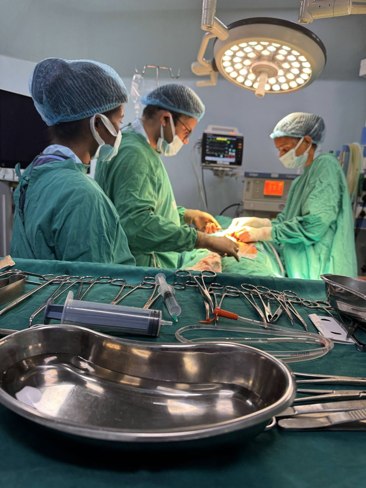

Acute appendicitis
Including perforated appendix and appendicular abscess; laparoscopic appendicectomy where suitable.
Read more →Dr. Vikeerna Bharti attends general surgical emergencies day and night at Samford Super Speciality Hospital, H.B. Road, Kokar Chowk, Ranchi.
Dr. Bharti works full time at Samford Super Speciality Hospital, where emergency assessment and surgery are available day and night with anaesthesia and ICU support. Keyhole or open surgery is chosen according to the condition, and specialist referral is arranged when it is needed.
Including perforated appendix and appendicular abscess; laparoscopic appendicectomy where suitable.
Read more →Perforated ulcer or bowel causing severe abdominal pain and infection inside the abdomen.
Blocked bowel with pain, vomiting, swelling of the abdomen and inability to pass stool or gas.
A painful hernia that will not go back, which can cut off the blood supply to the bowel.
Read more →Acute cholecystitis and empyema of the gallbladder; jaundice or fever from bile-duct stones is assessed and treatment arranged.
Read more →Injuries from road accidents, falls or assault — emergency laparotomy, chest drains and damage-control surgery when needed.
Arterial injuries and sudden loss of blood supply to a limb (acute limb ischaemia), including embolectomy and vascular repair where suitable.
Perianal, breast and soft-tissue abscesses needing urgent drainage.


Yes. Emergency assessment and surgery are available day and night at Samford Super Speciality Hospital, Kokar, Ranchi, where Dr. Vikeerna Bharti works full time and attends emergency operations, including appendix surgery at night. The hospital has anaesthesia and ICU support.
Go directly to the emergency department of Samford Super Speciality Hospital or the nearest hospital. Do not wait for a website or WhatsApp reply. Bring previous reports and a list of medicines if you can.
Many can, such as appendicectomy and some perforations, gallbladder and hernia emergencies. The surgeon chooses keyhole or open surgery depending on your condition and what is safest.
At Samford Super Speciality Hospital, cashless treatment is available under major health-insurance and TPA plans, Ayushman Bharat and the Jharkhand Rajya Karmi Swasthya Bima Yojana, subject to eligibility confirmed by the hospital.
Sudden severe abdominal pain, pain with fever or repeated vomiting, a swollen tight abdomen, a painful hernia that will not go back, yellow eyes with fever, vomiting blood, injuries to the abdomen or chest, or a limb that suddenly becomes painful, cold, pale or numb.
पेट में अचानक तेज दर्द, आंत में छेद (परफोरेशन), आंतों में रुकावट, हर्निया का फंस जाना, अपेंडिक्स, पित्त की थैली में सूजन या पस, दुर्घटना में पेट, छाती या खून की नसों (वैस्कुलर) की चोट — ऐसी आपात स्थिति में तुरंत अस्पताल पहुँचें। डॉ. विकीर्ण भारती सैमफोर्ड सुपर स्पेशियलिटी हॉस्पिटल, एच.बी. रोड, कोकर चौक, रांची में पूर्णकालिक (फुल टाइम) कार्यरत हैं और वहाँ ICU की सुविधा के साथ दिन-रात 24 घंटे आपातकालीन सर्जरी करते हैं, जहाँ संभव हो दूरबीन विधि से। WhatsApp के जवाब का इंतज़ार न करें। सैमफोर्ड हॉस्पिटल में आयुष्मान भारत, राज्य कर्मी स्वास्थ्य बीमा योजना (RKSBY) और प्रमुख स्वास्थ्य बीमा/TPA से कैशलेस इलाज की सुविधा है (पात्रता अस्पताल का बीमा डेस्क तय करता है)।
These links are for recovery and follow-up, not urgent assessment. Bring your discharge summary and reports. You can attend the Ranchi OPDs during the listed hours. For Garhwa, check the visiting date before travelling.